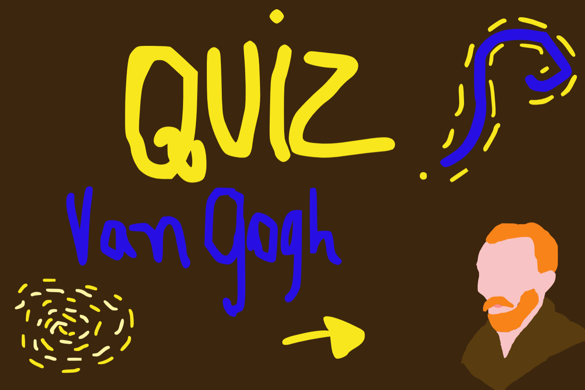
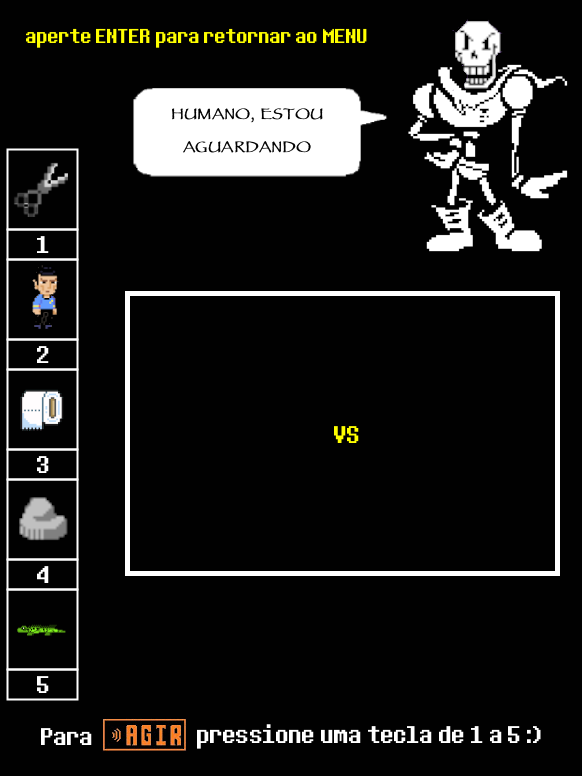

Criação realizada durante o meu estágio na instituição CESF, essa arte era enviada para os responsáveis dos alunos ao solicitarem a chave pix para efetuar pagamento.

Mídia interativa desenvolvida para a disciplina de autoração multimídia pelo aplicativo Wick Editor.

Fangame de undertale desenvolvido em processing para a disciplina de Progamação I.